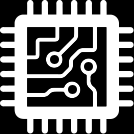

E-Waste in India
How do most of us dispose of a mobile phone or a television set? Usually, by selling it to a scrap dealer. But as per the E-Waste Management Rules, which were notified in October 2016, manufacturers of electric and electronic equipments must facilitate their collection and return it to authorised dismantlers or recyclers. However, even 3 years after the law was passed, there is little evidence that it is being implemented.
"According to recent studies, almost 2.7 million tons of electronic waste are being generated annually in India. That's a huge quantity of waste for a country like India," explained Priti Mahesh, a senior program coordinator for Toxics Link.
Parts for Recycling
There are some basic components in all electronics.

CPU
The CPU or Central Processing Unit is carefully processed to extract gold and silicon.
CMOS BATTERY
Also known as the non-volatile RAM, the CMOS is a battery-powered semiconductor that stores information in your computer. Its battery is typically a coin cell alkaline battery and is one of the most toxic and dangerous elements in your computer when it comes to recycling.
MOTHERBOARD
The nervous system of your computer is usually a multi-layered board that relies heavily on metals such as copper, silver, and gold. The vast majority of printed circuit boards and cards use a lead-based solder to keep everything together.
HARD DRIVE
Traditionally a hard drive stores your data on a rigid magnetic disk which is sealed in an aluminum housing with its own small circuit board. New solid-state drives are small and have no moving parts, so they have some metals but must be specially shredded to destroy the data they contain.
THE CASE
Acrylonitrile Butadiene Styrene (ABS) plastic is the most common element in today’s towers and cases, with a good frame and mix of ferrous steel to reinforce the shape. Because the plastic contains Brominated Flame Retardants, it must be processed.
Recycling Centres Throughout India
Δ E – Parisaraa
Δ Chintan India
Δ Government Recycling Centres